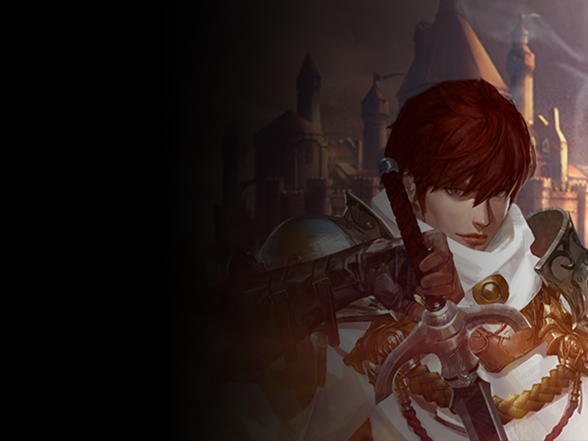
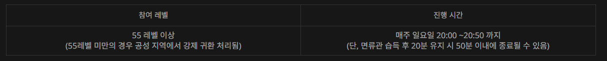

공성전 시스템 소개
공성전은 성을 차지 하기 위해 혈맹 단위로 진행되는 대규모 전투의 컨텐츠 입니다.
공성전 소개
리니지M에서 공성전이란 대규모 PvP가 발생되는 가장 핵심적인 컨텐츠라
볼 수 있습니다.
공성전은 성(Castle)을 차지 하기 위해 혈맹
단위로 경쟁을 하게 되며,
성을 소유하게 되면 일주일간 해당
혈맹은 승리의 혜택을 받을 수 있습니다.
• 참여 레벨 및 진행 시간
공성전은 매주 일요일 20:00에
시작되며,
공성전에 참여하고자 하는 혈맹의 경우 사전에
진행하는 하는 성에 일정 아데나를 지불하고 선포를 할 수 있습니다.
